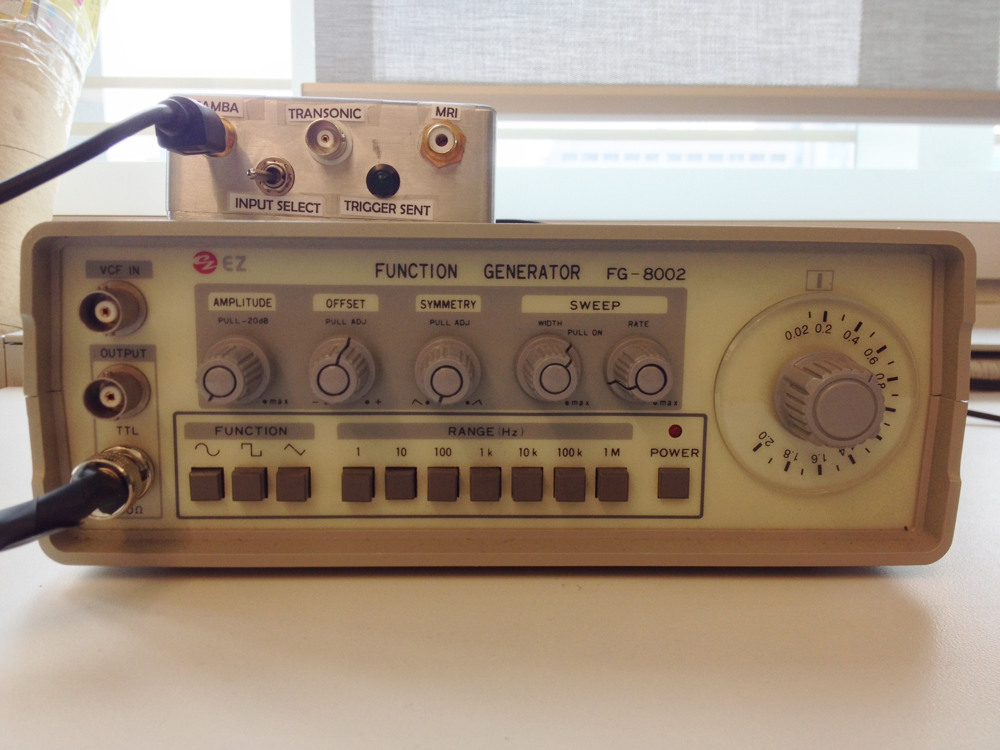
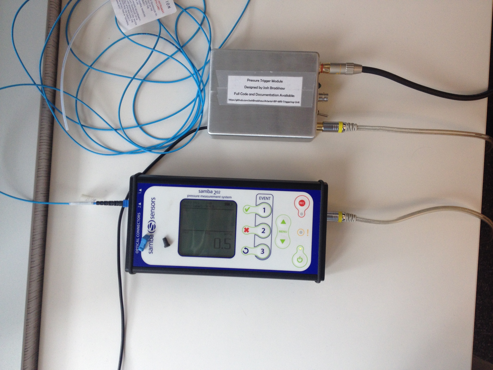

User Manual
Setup for Testing with the Analog Function Generator
USE CAUTION! The function generator's output can go up to 20V, which is enough to destroy the pressure trigger module. To use it safely:
- Set the amplitude to minimum and tape it down. Optionally, you can pull the knob out to drop the function generator into the millivolts range.
- The offset is a little bit tricky to set, because this particular function generator sucks and the offset drifts noticeably from day to day. Pull the knob out engage the switch, and start by setting it to about halfway between 12:00 and 1:00. You can tweak it by a smidgen later to get it just right.
- To get the waveform looking as close to a arterial blood pressure pulse as possible, set the function to SINE WAVE the frequency range to 10Hz, pull the symmetry knob out to engage it and twist counter-clockwise to the stop. Finally, set the frequency selector knob to 0.2 (for 120 BPM), and leave sweep turned off.
- At this point you can either use the BNC -> S-video adapter that I made to connect to the Samba input, or a standard BNC cable to connect to the Transonic input.
- Follow steps 7-9 of the Samba instructions and test the device.
The photo below illustrates the setup, as well as the correct positioning of the knobs on the function generator.

Setup for Samba 202 Pressure Measurement System
If this is your first time handling the Samba probes, take the time to read the relevant sections of the Samba user manual (included in the box). For invasive measurements you will require distiled and de-ionized water for cleaning the transducer tip, which you can obtain from the wet lab on the 8th floor of the Peter Gilgan Center for Research and Learning (the dispenser is a blue nozzle attached to the main sink). Sterile glassware is available in the hallway that separates the dry lab from the wet lab, you're free to take what you need as long as you return it to the same station for washing.
- Power up the Samba 202, it will take 1-3 minutes to stabilize the internal temperature.
- Connect the Samba pressure sensor to channel TWO of the pressure measurement system. Press firmly, because hearing a click does not necessarily mean that a good connection has been made. Be very careful to only handle the blue plastic connector and not the black stress relief on the cable. The fragility of these sensors can not be overstated. The reason we have to use channel two is that channel one is unreliable for unknown reasons, connector contamination is a possibility.
- Once the Samba unit recognizes the transducer press 1 to zero the transducer. The transducer should be zeroed in free air so that both the low and high blood pressures will give a positive pressure reading.
- At this point the Samba unit should be working properly and continuously measuring pressure. If you encounter a bad connection error or something along those lines check the manual for instructions. Now is the ideal time to insert the pressure transducer into the test subject.
- Connect the analog output of the Samba pressure sensor to the pressure trigger module using the S-Video cable provided (this cable has a transparent housing). The connection is labeled SAMBA.
- Ensure that the INPUT SELECT toggle switch is in the left position (facing the SAMBA input connector).
- Use the 25ft RCA cable to connect the trigger unit to the external trigger input on the MRI scanner. The external trigger input is on the left side of the scanner, and is marked with a little arrow directed inwards.
- Plug the USB cable attached to the pressure trigger module to a computer. Ensure that the computer is plugged in (not just running on battery). This is important, because not all laptops maintain a steady 5V USB voltage when they're running on battery power.
- Launch "realtimePlot.exe" on the computer.
- Use the serial port selector (dropdown menu on bottom left corner) and choose the port called Teensy USB Serial.
- Press Start and watch to see whether the system is triggering as expected.
The photo below illustrates most of the connections that you will need to make, as well as the screen that you should see when the Samba pressure measurement system is functioning properly. 
NOTE: The Samba sensors module is powered by USB, and has an internal battery. The battery should last for more than an hour of sustained used, but the unit is old enough that it can not be counted on. The easiest way to power the unit is via USB, (I searched many hardware stores for the DC jack that would fit the 5V input, with no success). A standard 2.5W (5V/500mA) USB power supply (which is the output of a standard computer, laptop or iPhone wall wart) does not provide enough power to keep the unit from running dead. Its possible that connecting the Samba device to a higher wattage USB power supply such as an iPad charger may keep it running steadily.
Setup for Transonic TS420 Perivascular Flow Module
Note: I never actually had access to a TS420 during the design or testing of this instrument. I used the user manual of the device to get the relevant specifications and designed and tested the device based upon the manufacturer's description of its typical behavior. Thus, I can not guarantee that these instructions are complete, or that the device will work properly with the triggering system, especially if Transonic comes out with a new version.
- Follow Transonic's instructions for setting up their flow measurement system.
- Connect the flow measurement system to the the TRANSONIC input connector on the pressure trigger module using a standard BNC cable (our lab already has two short BNC cables, longer cables are available from Active Surplus or monoprice.com if required).
- Ensure that the input selection toggle switch is in the right position (facing the Transonic connector)
- Follow steps 7-9 of the Samba instructions.
Troubleshooting
- As with all electronics, if you have trouble with the device start with unplugging it and plugging it back in.
- The device only reads the value of the input selection switch once during startup, so the switch must be in the correct position BEFORE the pressure trigger module is powered up.
- The RCA connectors on the scanner are recessed and poorly placed, we've had trouble getting a good connection with the cable before. If there is any discrepancy between what the monitoring tool shows and the scanner's external triggering display, triple check the cables. If the RCA cable has any visible damage, replace it ($7 at Active Surplus) because even minor sheath damage will have serious consequences on the cable's ability to pass signal in the MR environment.
- The LED I wired into the device was of questionable quality, don't worry it stops working. You will still be able to use the monitoring software to see when the trigger signal has been sent.
- BNC connectors only make a good connection when the little thumb-turn sleeve is locked in place, double check them every time.